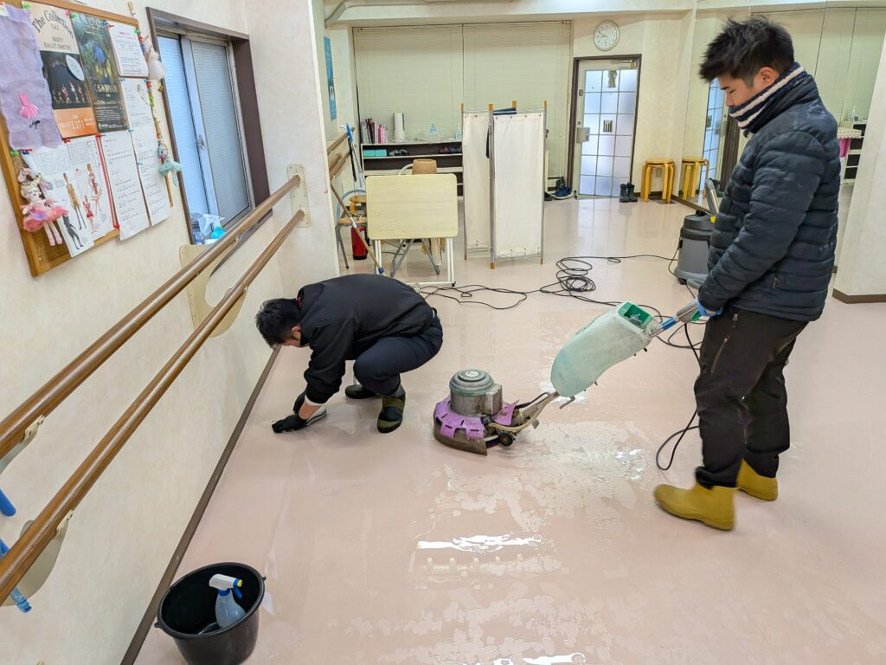
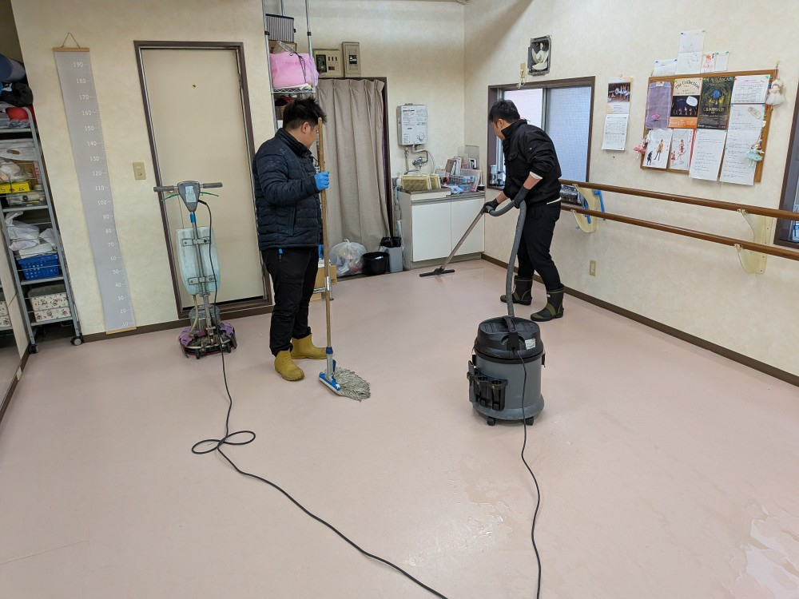
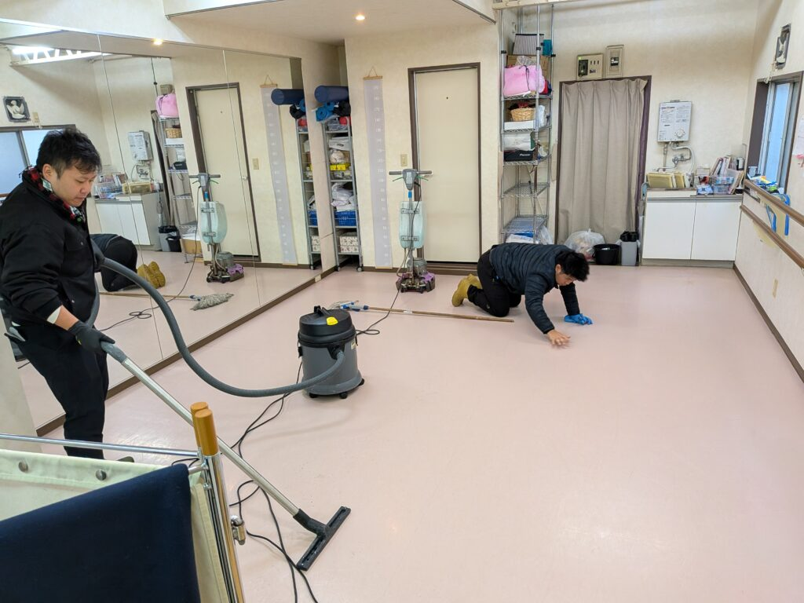
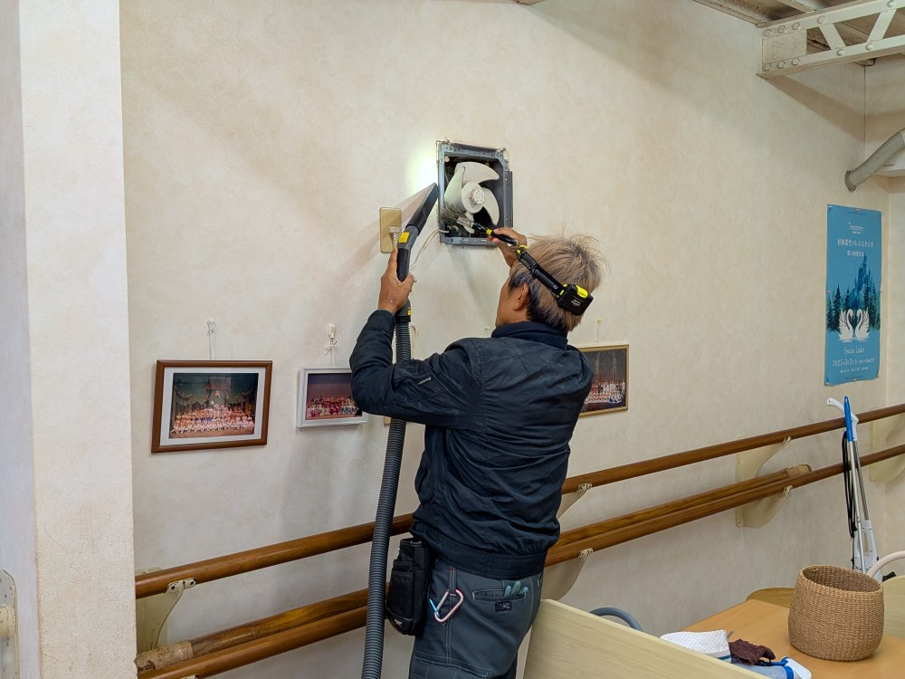
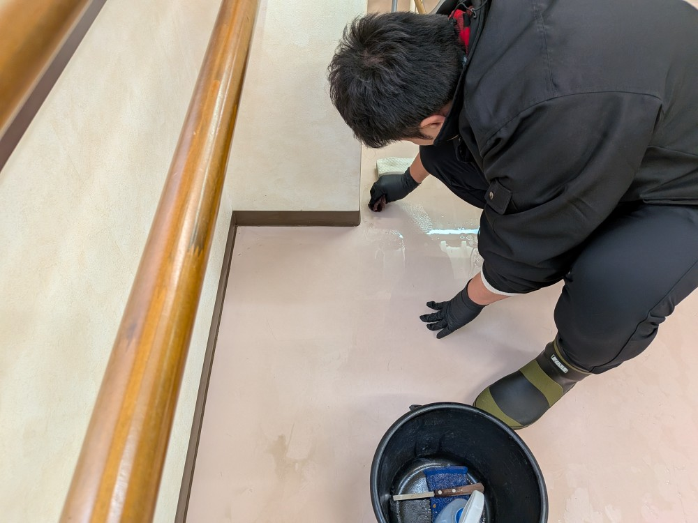
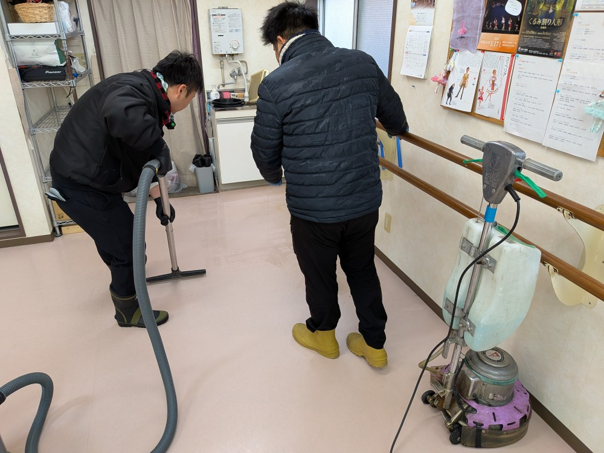
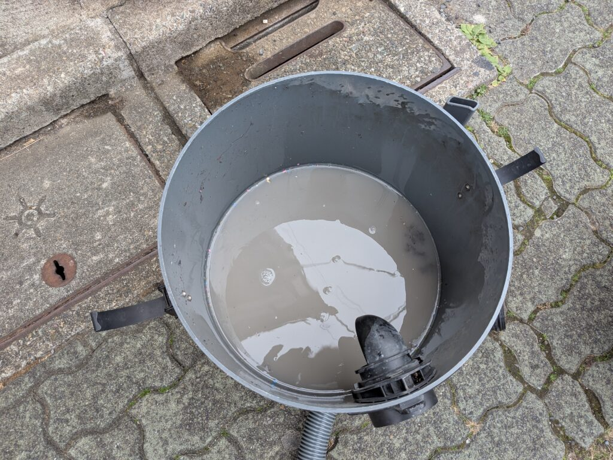
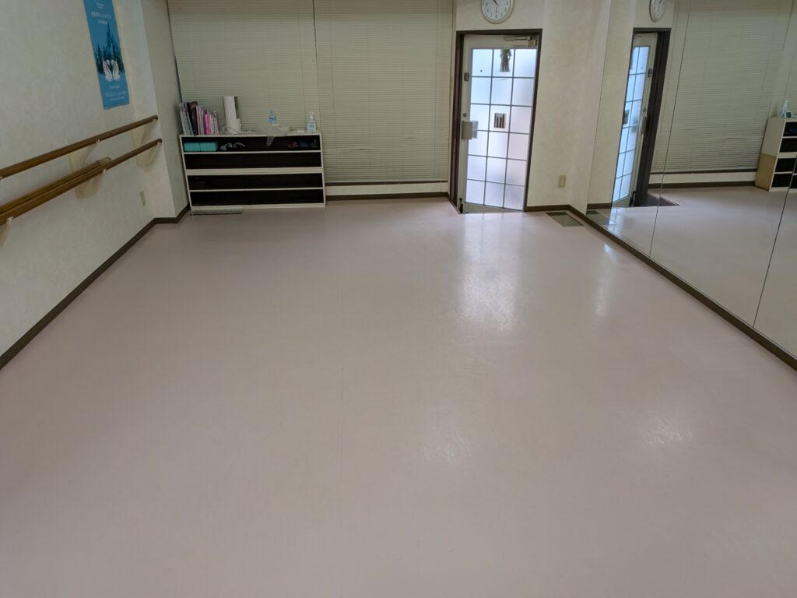

東京都大田区東雪谷のバレエスタジオm様のバレエ教室の床面洗浄クリーニングを実施しました！

東京都大田区東雪谷のバレエスタジオm様のバレエ教室の床面洗浄クリーニングを実施しました！バレエスタジオの床面洗浄クリーニングはとても特殊で、汚れは取りつつ、滑らない様に仕上げるテクニックが必要になり、工夫と経験が必要になります！みるみる綺麗になり、汚水がごっそり採取されました、すっきり綺麗になり、m様に喜んで頂けました！






